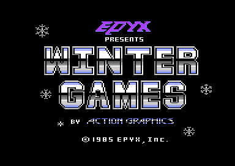
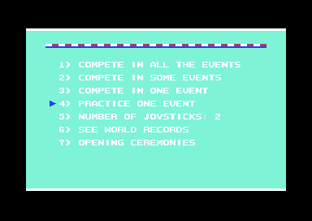
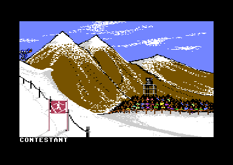
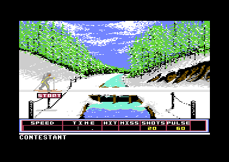
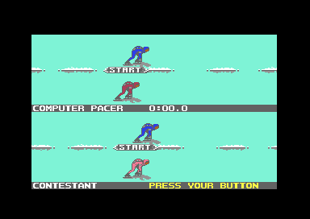
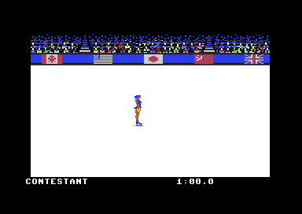
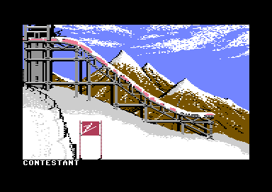
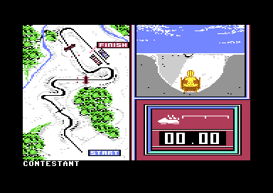

<meta charset="utf-8">
<meta name="viewport" content="width=device-width, initial-scale=1">
<title>Winter Games</title>
<link rel="preconnect" href="https://fonts.googleapis.com">
<link rel="stylesheet" href="https://fonts.googleapis.com/css2?family=Lato:wght@400;700;900&family=IBM+Plex+Mono:wght@400;500&display=swap">
<style>
:root{
  --bg:#23262d; --paper:#e9e7e1; --surface:#ffffff; --surface-2:#f1efea; --line:#d5d3cc; --line-soft:#e0ded8;
  --ink:#2f3136; --ink-soft:#55585f; --ink-mute:#80838a;
  --link:#1f5fa8; --link-hover:#154480; --accent:#1f5fa8;
  --amber:#c25a00; --cyan:#1f5fa8; --coral:#d04a3a; --green:#2a8a4a; --violet:#4a5bd6; --hl:#fff0c2;
  --chip:#2f3136; --chip-ink:#ffffff;
  --c64blue:#40318d; --c64grey:#686868;
  --fd:'Lato',system-ui,sans-serif; --fb:'Lato',system-ui,sans-serif; --fm:'IBM Plex Mono',ui-monospace,Menlo,monospace;
  --col:1080px; --gx:68px; --fs:17px; --lh:1.6; --hw:900; --h1:46px; --h2:26px; --sy:48px; --pp:26px; --r:10px;
  --plate-shadow:0 1px 2px rgba(0,0,0,.05),0 4px 14px rgba(0,0,0,.05);
}
*{box-sizing:border-box}
html{background:var(--bg);min-height:100%}
body{background:var(--paper);color:var(--ink);font-family:var(--fb);font-size:var(--fs);line-height:var(--lh);max-width:var(--col);margin:0 auto;min-height:100vh;padding:0 0 4rem}
h1,h2,h3{font-weight:var(--hw);letter-spacing:-.01em;text-wrap:balance;color:var(--ink);margin:0}
.wrap{padding:0 var(--gx)}
.hero{padding:48px var(--gx) 8px;text-align:left}
.eyebrow{font-family:var(--fm);font-size:12px;letter-spacing:.08em;text-transform:uppercase;color:var(--ink-mute);margin:0 0 10px}
.hero h1{font-size:var(--h1);line-height:1.15;letter-spacing:-.02em;margin:0 0 14px}
.hero .sub{margin:0 0 .6em;color:var(--ink-soft)}
section{padding:var(--sy) 0 24px}
section:last-of-type{border-bottom:none}
.fig{font-family:var(--fm);font-size:12px;letter-spacing:.08em;text-transform:uppercase;color:var(--ink-mute);margin:0 0 10px}
h2.t{font-size:var(--h2);margin-bottom:12px}
.lede{color:var(--ink-soft);margin:0 0 30px}
.plate{background:var(--surface);border:1px solid var(--line);border-radius:var(--r);padding:var(--pp);box-shadow:var(--plate-shadow)}
.cap{font-size:14px;color:var(--ink-mute);margin-top:14px;line-height:1.55}
.cap b{color:var(--ink);font-weight:700}
code{font-family:var(--fm);font-size:.82em;background:var(--chip);color:var(--chip-ink);border-radius:4px;padding:2px 6px;overflow-wrap:break-word;-webkit-box-decoration-break:clone;box-decoration-break:clone}
.wg-shots{display:grid;grid-template-columns:repeat(3,1fr);gap:12px}
.wg-shots figure{margin:0}
.wg-shots img,.wg-pic{width:100%;height:auto;image-rendering:pixelated;display:block;border-radius:4px}
.wg-shots figcaption{font-size:13px;color:var(--ink-mute);margin-top:4px}
.wg-two{display:grid;grid-template-columns:1fr 1fr;gap:18px;align-items:start}
.wg-tab{border-collapse:collapse;width:100%;font-size:15px}
.wg-tab th,.wg-tab td{text-align:left;padding:5px 10px;border-bottom:1px solid var(--line-soft);vertical-align:top}
.wg-tab th{font-family:var(--fm);font-size:12px;letter-spacing:.06em;text-transform:uppercase;color:var(--ink-mute);font-weight:500}
.wg-tab td.n{font-family:var(--fm);text-align:right}
.wg-canvas{width:100%;height:auto;image-rendering:pixelated;display:block;background:#000;border-radius:4px}
.wg-ctl{display:flex;flex-wrap:wrap;gap:10px 18px;align-items:center;margin:0 0 14px;font-size:15px}
.wg-ctl label{display:flex;gap:6px;align-items:center}
.wg-ctl input[type=range]{width:180px}
.wg-out{font-family:var(--fm);font-size:15px;background:var(--surface-2);border-radius:6px;padding:10px 14px;margin-top:12px}
.wg-big{font-size:28px;font-weight:700;color:var(--ink)}
.wg-key{display:inline-block;width:12px;height:12px;border-radius:2px;vertical-align:-1px;margin-right:4px}
@media (max-width:700px){:root{--gx:16px;--h1:34px}.wg-shots{grid-template-columns:repeat(2,1fr)}.wg-two{grid-template-columns:1fr}}
</style>
<!-- tabs -->
<header class="hero">
  <p class="eyebrow">1985 · Epyx</p>
  <h1>Winter Games</h1>
  <p class="sub">Seven winter sports on two disk sides, each one a program of its own that the loader swaps in over the menu. Every judge, pacer and clock in them is a few lines of arithmetic, and in Figure Skating that arithmetic wraps round: twenty falls earn a perfect 6.0.</p>
</header>
<main class="wrap">

<section data-part="">
  <p class="fig">01 · The game</p>
  <h2 class="t">The game</h2>
  <p class="lede">Up to eight players pick a country and compete in seven events. The menu keeps the scores and hands out the medals.</p>
  <div class="plate">
    <div class="wg-two">
      <figure style="margin:0"><figcaption class="cap">The title screen, the first thing the loader puts in memory.</figcaption></figure>
      <figure style="margin:0"><figcaption class="cap">The main menu. Option 4, practice, plays one event with no scores kept.</figcaption></figure>
    </div>
  </div>
  <p>After the title, an opening ceremony runs by itself: a torch bearer runs up the steps and lights the flame, and doves fly. Then the menu asks for the players. Each types a name and chooses one of eighteen flags, one of them Epyx's own. The players can compete in all seven events, in some of them, or in one, or practise any event alone.</p>
  <p>The seven events are Hot Dog Aerials (freestyle ski jumps judged on stunts), Biathlon (cross-country skiing with four shooting ranges), Speed Skating (two skaters side by side), Figure Skating and Free Skating (a program of jumps and spins, judged), Ski Jump (distance and style), and Bobsled (a run down an icy chute against the clock). After each event the menu ranks the players, gives gold, silver and bronze, and plays the winner's anthem. After all seven, the medals decide the champion: five points for gold, three for silver and one for bronze.</p>
  <div class="plate" style="margin-top:20px">
    <div class="wg-shots">
      <figure><figcaption>Hot Dog Aerials</figcaption></figure>
      <figure><figcaption>Biathlon</figcaption></figure>
      <figure><figcaption>Speed Skating</figcaption></figure>
      <figure><figcaption>Figure Skating</figcaption></figure>
      <figure><figcaption>Ski Jump</figcaption></figure>
      <figure><figcaption>Bobsled</figcaption></figure>
    </div>
    <p class="cap">Each event at its start, from the emulator. Free Skating looks the same as Figure Skating: it is the same program, entered five bytes further on.</p>
  </div>
</section>

<section data-part="menu">
  <p class="fig">02 · The anthems</p>
  <h2 class="t">Music: an anthem for every flag</h2>
  <p class="lede">Each country's flag has its anthem. The menu plays it when a player picks the flag, and again for every gold medal.</p>
  <div class="plate">
    <div id="wg-anthems"></div>
    <p class="cap">Each button runs the game's own music player, the bytes the Source tab lists, on a model of the C64's processor. A <code>$</code> marks a number in hexadecimal, base 16, and here each is an address in the C64's memory. The page calls <code>music_init</code> (<a href="source-menu.html#1DA3"><code>$1DA3</code></a>), then <code>music_start</code> (<code>$1DE0</code>) with the country's place in the flag chooser, then <code>music_step</code> (<code>$1E11</code>) twice a frame, as the menu calls it. A frame is one picture on the screen, fifty a second on a European C64. The opening ceremony's two tunes run on the ceremony's copy of the same player (<a href="source-opening.html#B056"><code>$B056</code></a>). <code>test_music.js</code> runs every button against the game's code and checks every write to the sound chip, frame by frame.</p>
  </div>
  <p>The anthem player is small. The C64's sound chip, the SID, has three voices, each playing one note at a time, and a tune is a list of four bytes a note: one pitch for each voice and a length. Voices 1 and 2 play a pulse wave, a hollow tone, and voice 3 a sawtooth, a brighter one. For a note's last four steps the player turns each voice's gate off, the chip's signal to let the note fade. So every note dies away briefly before the next begins. The player steps twice a frame.</p>
  <p>The table at <code>$1DF9</code> turns a place in the flag chooser into a tune. The chooser has three rows of eight places, and only six flags in each row. The two places after each row's sixth flag are empty, and the menu uses two of those empty places for its own tunes: place 6 is the final standings' tune, and place 7 the world records'. The others play the U.S.A.'s anthem. The opening ceremony carries a second tune that it never plays; its 345 bytes are the menu's world records tune, byte for byte.</p>
</section>

<section data-part="">
  <p class="fig">03 · The events' music</p>
  <h2 class="t">Music: each event's tune, on one sound engine</h2>
  <p class="lede">Every event brings its own music and sound effects, and all but one play them on the same engine.</p>
  <div class="plate">
    <div id="wg-events"></div>
    <p class="cap">Each button runs the event's own sound engine on the bytes the Source tab shows: <code>stop_all</code>, then <code>start_sound</code> with the tune's number in the processor's A register, then <code>sound_step</code> once a frame. In the game the raster interrupt calls it: the video chip stops the program when it reaches a set line of the screen, once a frame, and runs a routine of the event's. Bobsled's engine runs at <code>$C000</code>, where its start-up copies it. Each event's tune goes round until it is stopped, except the two skating programs': Figure Skating's lasts 3,633 frames and Free Skating's 7,203, a minute and two minutes at sixty frames a second, the length of each program. <code>test_music.js</code> checks every write against the game's code.</p>
  </div>
  <div class="plate" style="margin-top:18px">
    <div id="wg-effects"></div>
    <p class="cap">A few of the effects, started the same way. The long jump's sound starts two more, the fanfare and the claps, from its own script.</p>
  </div>
  <p>The engine has six slots of 32 bytes. A sound is a header (which slot it plays in and on which voice of the SID) and a script, a little program of its own. A script byte under <code>$80</code> (128) is a note, followed by its length in frames. A byte from <code>$80</code> up is one of 29 commands: loops, calls and jumps within the script, a call to machine code, the envelope, the waveform, a slide, and the filter. Command 2 starts another sound, which is how a tune's first voice starts the other two. Every frame <code>sound_step</code> counts each slot down, runs its script when the count reaches zero, and copies the slots to the chip, slot 5 first, so that where two slots share a voice the lower-numbered one wins.</p>
  <p>Hot Dog, Biathlon, Figure and Free Skating, Ski Jump and Bobsled carry this engine. Speed Skating carries an older form with three slots (<a href="source-speed-skating.html#A600"><code>$A600</code></a>), without the pulse-width sweep (a slow change in the pulse wave's shape that makes a held note shimmer) and without the <code>S</code> key that <a href="discoveries.html">switches the other events' sound off</a>.</p>
</section>

<section data-part="bobsled">
  <p class="fig">04 · One frame</p>
  <h2 class="t">Bobsled, one frame rebuilt from memory</h2>
  <p class="lede">The bobsled screen is one bitmap: the course map on the left, the view down the chute at the top right, and the panel with the speed bar and the clock below it.</p>
  <div class="plate">
    <canvas id="wg-frame" class="wg-canvas" width="768" height="544"></canvas>
    <p class="cap">Drawn by the site's model of the video chip from the frame's memory and the 30 writes the game made to the chip during it, recorded in the emulator in the left-hand bend from stretch 21, the sled high on the right wall. The drawing matches the emulator's picture of the same frame pixel for pixel, but for the player's name on the bottom row: the video chip draws that row's letters from the character ROM, where the C64 keeps its own letters, and the page does not carry it.</p>
  </div>
  <p>The screen is a multicolour bitmap: a picture stored dot by dot, where each pair of dots across shows one of four colours. The video chip sees 16K of memory at a time, and this picture is in its third 16K, bank 2, at <code>$A000</code>, with its colours at <code>$8000</code>. Twice a frame the raster interrupt changes the chip's mode: to bitmap for the picture, and to text for the bottom row, which shows the player's name in the character ROM's letters. The view down the chute is redrawn a piece at a time as the sled moves on: a far piece and a near piece, chosen by the stretch of course the sled is on (<a href="source-bobsled.html#4759"><code>bs_course</code></a>). The sled is drawn with sprites, small pictures the video chip lays over the screen. They are built again from one of 13 frames as the sled climbs the walls (<code>build_sled</code>, <code>$4E45</code>).</p>
</section>

<section data-part="resident">
  <p class="fig">05 · The loader</p>
  <h2 class="t">The loader stays while everything else changes</h2>
  <p class="lede">Eleven files, two disk sides and one fast loader that never leaves memory.</p>
  <div class="plate" data-part="">
    <table class="wg-tab">
      <thead><tr><th>File</th><th>What it is</th><th>Loads at</th><th>Ends at</th></tr></thead>
      <tbody>
        <tr><td>boot</td><td>One block over the addresses BASIC jumps through, so that LOAD ends by jumping into it</td><td><code>$02A7</code></td><td><code>$030B</code></td></tr>
        <tr><td><code>COPYRIGHT 1985</code></td><td>The fast loader, which copies itself to <code>$0900</code> and stays</td><td><code>$C000</code></td><td><code>$C636</code></td></tr>
        <tr><td><code>T</code></td><td>The title screen</td><td><a href="source-title.html#3F00"><code>$3F00</code></a></td><td><code>$67D0</code></td></tr>
        <tr><td><code>O</code></td><td>The opening ceremony</td><td><a href="source-opening.html#6400"><code>$6400</code></a></td><td><code>$B420</code></td></tr>
        <tr><td><code>M</code></td><td>The menu, the players and the medals</td><td><a href="source-menu.html#0F00"><code>$0F00</code></a></td><td><code>$3FE5</code></td></tr>
        <tr><td><code>H</code>, <code>I</code></td><td>Hot Dog Aerials, Biathlon (side 1), over the menu</td><td><code>$1000</code></td><td><code>$6CFE</code>, <code>$9FFE</code></td></tr>
        <tr><td><code>S</code></td><td>Speed Skating (side 1), which leaves the menu in place</td><td><a href="source-speed-skating.html#4C00"><code>$4C00</code></a></td><td><code>$ADC8</code></td></tr>
        <tr><td><code>F</code>, <code>J</code>, <code>B</code></td><td>Figure and Free Skating, Ski Jump, Bobsled (side 2), over the menu</td><td><code>$1000</code></td><td><code>$79FE</code>, <code>$7AFE</code>, <code>$A6FE</code></td></tr>
      </tbody>
    </table>
    <p class="cap">The files as the loader's table at <a href="source-resident.html#0CC3">$0CC3</a> gives them: twelve bytes a file, its name, load address, end, entry point and disk side.</p>
  </div>
  <p>The boot file loads <code>COPYRIGHT 1985</code>, which copies the fast loader to the six pages from <code>$0900</code> (a page is 256 bytes) and keeps it there for good. Every other part calls it at three fixed addresses: <code>$0900</code> to go back to the menu, <code>$0903</code> to load and run a file by its number, and <code>$0934</code> to save the world records. An event ends by jumping to <code>$0900</code>, which loads the menu again over it and starts it where it left off, at an address the menu kept before it loaded the event.</p>
  <p>Before a load, <code>ldr_check_side</code> (<code>$0958</code>) reads one byte of the disk's header, the eighth letter of the disk's name, which is 1 on side 1 and 2 on side 2. When the file wants the other side, the loader asks for it: "INSERT WINTER GAMES SIDE 2 THEN PRESS JOYSTICK BUTTON". RUN/STOP and RESTORE pressed together stop the program wherever it is and run the loader's own routine for those keys, which goes back to the main menu.</p>
</section>

<section data-part="menu">
  <p class="fig">06 · The players</p>
  <h2 class="t">One page of memory holds every player</h2>
  <p class="lede">The menu and every event share the 256 bytes at <code>$0800</code>, which the loader clears once and nothing loads over.</p>
  <div class="plate">
    <table class="wg-tab">
      <thead><tr><th>Bytes of a record</th><th>What they hold</th></tr></thead>
      <tbody>
        <tr><td><code>+$00</code>-<code>+$0A</code></td><td>The name, up to ten letters</td></tr>
        <tr><td><code>+$0B</code>-<code>+$0F</code></td><td>The country's code in brackets, such as (USA)</td></tr>
        <tr><td><code>+$10</code>-<code>+$15</code></td><td>The score as text, as the event shows it</td></tr>
        <tr><td><code>+$16</code>-<code>+$18</code></td><td>The score as a number, which the menu sorts by</td></tr>
        <tr><td><code>+$19</code>-<code>+$1B</code></td><td>Gold, silver and bronze medals</td></tr>
        <tr><td><code>+$1C</code></td><td>The country</td></tr>
        <tr><td><code>+$1D</code>-<code>+$1F</code></td><td>Not the player's: three of the game's shared variables in each record's gap</td></tr>
      </tbody>
    </table>
    <p class="cap">Eight records of 32 bytes (<a href="source-menu.html#1A36"><code>player_offsets</code></a>). The gaps hold the number of players at <code>$081E</code>, the event at <code>$081F</code> and the number of joysticks at <code>$087D</code>, among others.</p>
  </div>
  <p>Each event writes its score into the player's record in two forms: the text the results screen prints, and a number the menu sorts. The menu has one sort, highest first (<code>sort_players</code>, <code>$19BD</code>). That suits marks and distances, but not times, where the lowest wins. So Biathlon, Speed Skating and Bobsled store their times turned over, each byte subtracted from its largest value, and the fastest time becomes the biggest number.</p>
</section>

<section data-part="hot-dog">
  <p class="fig">07 · Hot Dog Aerials</p>
  <h2 class="t">Hot Dog: two moves decide the mark</h2>
  <p class="lede">In the air the stick picks a move: four stunts on the diagonals and two flips, back and forward. Only the first two moves count.</p>
  <div class="plate">
    <table class="wg-tab">
      <thead><tr><th>The first two moves</th><th style="text-align:right">Base mark</th></tr></thead>
      <tbody>
        <tr><td>None</td><td class="n">0.0</td></tr>
        <tr><td>One stunt</td><td class="n">6.3</td></tr>
        <tr><td>One flip</td><td class="n">7.2</td></tr>
        <tr><td>The same stunt twice</td><td class="n">8.7</td></tr>
        <tr><td>The same flip twice</td><td class="n">9.2</td></tr>
        <tr><td>Two different stunts</td><td class="n">9.6</td></tr>
        <tr><td>A stunt and a flip, or two different flips</td><td class="n">10.0</td></tr>
      </tbody>
    </table>
    <p class="cap">From <a href="source-hot-dog.html#17FF"><code>judge</code></a>, which then takes 1.4 off for each awkward move. A fall scores nothing.</p>
  </div>
  <p>Each move's script holds a pose while the stick is held. Held for 10 to 19 frames, the move is clean; let go sooner or later, it is awkward, and the skier shows a clumsy pose for twenty frames. A flip held long enough goes round again and counts as a second flip, the same as the first. At the snow the stick must be centred and the skier in the arms-up pose, or the landing is one of four falls, chosen at random.</p>
  <p>Eight judges then mark the jump. Each adds a random tenth below or up to two tenths above the base mark, except to 0 and to 10.0, and the total is their average (<code>judge_marks</code>, <code>$185D</code>). A mark of 9.0 or more brings the crowd's cheer.</p>
</section>

<section data-part="biathlon">
  <p class="fig">08 · Biathlon</p>
  <h2 class="t">Biathlon: the skier's pulse moves the rifle</h2>
  <p class="lede">Every stroke raises the pulse, and at the range the pulse makes the sight jump on every heartbeat.</p>
  <div class="plate">
    <canvas id="wg-heart" class="wg-canvas" width="720" height="300" style="background:#fff"></canvas>
    <p class="cap">The 41 entries of <a href="source-biathlon.html#7186"><code>heart_table</code></a>, read from the listing: for each pulse from 60 to 140, the frames between heartbeats (<span class="wg-key" style="background:#d04a3a"></span>) and how fast the sight falls between them, in 256ths of a line a frame (<span class="wg-key" style="background:#1f5fa8"></span>).</p>
  </div>
  <p>Skiing is a rhythm: the stick left or right on the flat and uphill, down on the downhill to push with both poles, let go between strokes. The power of a stroke builds while the skier waits, eight a frame on the flat and all at once uphill, and the stroke adds it to the speed. Each stroke also raises the pulse by a 32nd of what it lacks of 140, twice as much uphill (<code>pulse_up</code>, <code>$2EC6</code>). Resting, the pulse falls back towards 60.</p>
  <p>At a range the heart decides the aim. Each beat throws the sight up to line 88, and between beats it falls, faster the higher the pulse. A shot hits only while the sight is between lines 113 and 117 (<code>shot</code>, <code>$6FEC</code>). At a pulse of 60 the heart beats every 50 frames and the sight drifts down slowly; at 140 it beats every 15 frames and drops more than twice as fast. Each miss adds five seconds to the time.</p>
</section>

<section data-part="speed-skating">
  <p class="fig">09 · Speed Skating</p>
  <h2 class="t">Speed Skating: a pacer on a rubber band</h2>
  <p class="lede">With one player, the computer skates the other lane, and it skates better when it is behind.</p>
  <div class="plate">
    <table class="wg-tab">
      <thead><tr><th>Who leads</th><th>The pacer's skill, each time it picks a stride</th></tr></thead>
      <tbody>
        <tr><td>The player, or level</td><td>One more, to 255 at most</td></tr>
        <tr><td>The pacer, skill above 160</td><td>Two less</td></tr>
        <tr><td>The pacer, skill 160 or less</td><td>One less, to 56 at least</td></tr>
      </tbody>
    </table>
    <p class="cap">From <a href="source-speed-skating.html#A289"><code>pacer_adjust</code></a>. The skill starts each race at 104 (<code>ss_race</code>, <code>$946C</code>).</p>
  </div>
  <p>A skater's legs are a cycle of states, a stroke to the right and its glide, then a stroke to the left and its glide. The stick moves the cycle on: right from the left glide starts the right stroke, left from the right glide the left one. Speed comes only from the first two states of each stroke, so the rhythm is everything. The pacer has no joystick: each time its stride moves on, it compares a random byte with its skill, and below the skill it takes the right direction for its state. Otherwise it holds its stroke at full stretch a little too long.</p>
  <p>The skill moves after every choice, up while the player leads and down while the pacer does. A player far ahead faces a pacer that chooses right 255 times in 256; a player far behind, one that chooses right only 56 times in 256. Either way the pacer stays close. A skater who has not crossed the line after three minutes gets a FAULT.</p>
</section>

<section data-part="skating">
  <p class="fig">10 · Figure and Free Skating</p>
  <h2 class="t">Skating: how the base mark is worked out</h2>
  <p class="lede">One program in two modes. Figure Skating has one minute and counts each element once; Free Skating has two and counts each up to three times.</p>
  <div class="plate">
    <div class="wg-ctl">
      <label><select id="wg-mode"><option value="0">Figure Skating</option><option value="1">Free Skating</option></select></label>
      <label>Falls <input id="wg-falls" type="range" min="0" max="40" value="0"><span id="wg-falls-n">0</span></label>
      <label>Awkward moves <input id="wg-awk" type="range" min="0" max="20" value="0"><span id="wg-awk-n">0</span></label>
    </div>
    <div class="wg-ctl" id="wg-elems"></div>
    <div class="wg-out">Base mark <span class="wg-big" id="wg-mark">0.0</span> <span id="wg-mark-note"></span></div>
    <p class="cap">Each change runs the game's own <a href="source-skating.html#1CFA"><code>base_mark</code></a> on the listing's bytes, with the falls, the awkward moves and the elements where the program leaves them (<code>$46</code>, <code>$47</code> and the list from <code>$4A</code>). The judges then add their random tenths. <code>test_marks.js</code> checks the page against the routine.</p>
  </div>
  <p>The elements are seven: the camel spin, the sit spin, the double and triple axel, the double and triple lutz, and the camel spin into the sit spin. Skating forward, fire with the stick up and right jumps a double axel, down and right a triple. Skating backward, up spins the camel, down the sit spin, and the left diagonals jump the lutzes. A take-off is clean when fire is pressed on the stride's glide, and awkward otherwise. A spin must be left after exactly seven turns, or its ending is awkward; an eighth turn throws the skater down.</p>
  <p>In Figure Skating the elements are worth 0.7, 0.7, 0.6, 1.1, 0.6, 1.1 and 1.2, and the seven together make exactly 6.0. Each awkward move costs 0.2 and each fall 0.7. In Free Skating each counts up to three times at a lower value, and the falls and awkward moves also lower a ceiling of 6.0. The arithmetic has two faults. Free Skating's marks come out a tenth short, and Figure Skating's penalty can wrap round: set the falls to 22 with no elements and the mark is 6.0. Both are on the <a href="discoveries.html">Discoveries</a> tab.</p>
</section>

<section data-part="ski-jump">
  <p class="fig">11 · Ski Jump</p>
  <h2 class="t">Ski Jump: a centred lean flies furthest</h2>
  <p class="lede">In the air a random drift tips the jumper off balance, and the corner close-up shows which way. Pushing the stick against it brings the jumper back.</p>
  <div class="plate">
    <canvas id="wg-drag" class="wg-canvas" width="720" height="240" style="background:#fff"></canvas>
    <p class="cap">The flight's speed lost each frame, in 256ths, for each of the nine bands of the lean (<a href="source-ski-jump.html#18AA"><code>drag_table</code></a>), and the style points lost when the jumper comes back to the centre from each band (<code>lean_size</code> and <code>lean_penalties</code>, <code>$16DA</code>).</p>
  </div>
  <p>A flight starts at a speed of 60 and lands when the speed has fallen to 40. Each frame the speed adds to the distance, and the lean's drag takes some off: 14 in the centre band, up to 21 at the edges. So a jumper kept centred stays in the air longest and flies furthest. The drift is drawn at random, a direction on one of two axes, and the close-up's poses show it: the knees bent, too far forward, too far back, the skis crossed. The stick pushes the lean back two a frame, three against the drift's own direction.</p>
  <p>Style starts at 20. Each return to the centre costs 0, 2, 4 or 8 points, by the worst lean since the last one. A good landing keeps at least 6, and a fall takes 18. The score is three times the distance plus the style points, worked out on the whole distance, so a jump shown as 68.6 metres scores 205.9.</p>
</section>

<section data-part="bobsled">
  <p class="fig">12 · Bobsled</p>
  <h2 class="t">Bobsled: the course, stretch by stretch</h2>
  <p class="lede">The run is 177 stretches of four bytes each. Each names the view's two pieces, the bend, and how many dots of the course map to light.</p>
  <div class="plate">
    <div class="wg-two">
      <canvas id="wg-map" class="wg-canvas" width="256" height="368"></canvas>
      <div>
        <div class="wg-ctl"><label>Stretch <input id="wg-stretch" type="range" min="0" max="176" value="0"></label></div>
        <div class="wg-out" id="wg-stretch-out"></div>
        <p class="cap">The map's 400 dots (<a href="source-bobsled.html#88A4"><code>map_dots</code></a>) in the colour of the stretch that lights them: <span class="wg-key" style="background:#9aa0a6"></span>a straight, <span class="wg-key" style="background:#d04a3a"></span>a right-hand bend, <span class="wg-key" style="background:#1f5fa8"></span>a left-hand bend. The start is at the bottom. The stretch chosen is drawn white, its bytes from <a href="source-bobsled.html#4759"><code>bs_course</code></a>.</p>
      </div>
    </div>
  </div>
  <p>The speed is a number three bytes long. Each frame gravity adds 10 to its middle byte on a straight and only 2 in a bend, and friction takes off the sled's distance, in whole places, from the line the bend wants. A bend also pushes the sled up its outside wall, harder the faster it goes. The sled has 31 places across the chute, and ten frames in a row at either wall is a crash. The stick steers, and down or fire brakes while the speed is high.</p>
  <p>A crashed sled stops being steered, but the run is not over until the wreck has slid to a halt: the speed drops a little every three frames, and the course moves on beneath it. A wreck that comes to a halt before the line records 99.99, the slowest time there is. The clock counts six frames to a tenth and shows the frames as the hundredths, 0, 2, 4, 5, 7 and 9.</p>
</section>

</main>
<footer style="margin:16px 0 0;padding:22px var(--gx) 0;border-top:1px solid #e0ded8;font-family:'IBM Plex Mono',ui-monospace,Menlo,monospace;font-size:12px;color:#80838a"><a href="https://github.com/gamesexplained/gamesexplained" style="color:#1f5fa8;text-decoration:none">GitHub</a> · <a href="https://discord.gg/3V9GWyRDWV" style="color:#1f5fa8;text-decoration:none">Discord</a><br>© Games Explained contributors. Write-ups, facts and symbol maps are available under <a href="https://creativecommons.org/licenses/by-sa/4.0/" style="color:#1f5fa8;text-decoration:none">CC BY-SA 4.0</a>; code under <a href="https://opensource.org/licenses/MIT" style="color:#1f5fa8;text-decoration:none">MIT</a></footer>

<script src="../../lib/c64.js"></script>
<script src="../../lib/sid.js"></script>
<script src="../../lib/cpu6502.js"></script>
<script type="application/json" id="wg-frame-data">{"schema":1,"standard":"PAL","lines":312,"cycles":63,"about":"Bobsled, stretch 24, in the left-hand bend from stretch 21: one frame recorded in VICE through vice-mcp (kit/c64/frame.py), trimmed to the memory the drawing reads","vic":[249,96,249,96,17,96,17,96,249,117,249,117,17,117,17,117,204,59,0,141,8,255,216,0,9,118,241,0,170,0,255,255,240,240,246,241,240,249,247,248,247,248,247,248,247,248,247],"cia2":[129,63],"cpu":[47,54],"writes":[[241,60,53272,7,6],[242,15,53265,27,27],[242,21,53270,200,8],[251,53,53272,9,8],[252,2,53265,59,59],[252,8,53270,216,24],[252,27,53264,0,0],[254,14,53248,251,251],[254,18,53250,251,251],[254,22,53256,251,251],[254,26,53258,251,251],[254,32,53252,19,19],[254,36,53254,19,19],[254,40,53260,19,19],[254,44,53262,19,19],[254,52,53264,204,204],[254,63,53249,94,94],[255,4,53251,94,94],[255,8,53253,94,94],[255,12,53255,94,94],[255,18,53257,115,115],[255,22,53259,115,115],[255,26,53261,115,115],[255,30,53263,115,115],[264,5,51192,97,97],[264,11,51193,176,176],[264,17,51194,173,173],[267,31,51192,48,48],[267,37,51193,216,216],[267,43,51194,86,86]],"colour":"BQUKDw8KCgoKCgoKCg4BDwEKBQ4CAgICAgICAgICAgICAgICAgICAgEBBQUKBQoKCgoKCgoKAQ4OAQEOAgICAgICAgICAgICAgICAgICAgIBDQ0KAQEKCgoKCgoKCgoKDw8ODgICAgICAgICAgICAgICAgICAgICDQ0KCg4KCgoKCgoKCgoKCgoKCg4CAgICAgICAgICAgICAgICAgICAgUKDQUPCgoKCgoKCgoOCAoKCgoOAgICAgICAgICAgICAgICAgICAgIKDQEPDw4KCgoKCgoKCggKCgoKDg8PDw8PDw8PDw8PDw8PDwwKCgoCBQUPDg8KCgoKCgoKCgoKCgoKCg4PDw8PDw8PDw8PDw8PDw8PDw8PAgoPDg8KCgoKCgoKCgoKCgoKCgoODw8PDw8PDw8PDw8PDw8PDw8PDwIKDg8KCgoKCgoKCgoKCgoKCgoKDg8PDw8PDw8PDw8PDw8PDw8PDw8CCgoKCgoKCgoKCgoKCgoKCgoKCg4PDw8PDw8PDw8PDw8PDw8PDw8PAgoKCgoKCgoKCgICDwoKCgoKCgoODw8PDw8PDw8PDw8PDw8PDw8PDwIPCgoKCgoKCgoFDQ0NBQUKCgoKDg8PDw8PDw8PDw8PDw8PDw8PDw8CCgoKCgoKCgoKDQUNDQEBBQoKCg4BAQEBAQEBAQEBAQEBAQEBAQEBAgoKCgoKCgoKCgEBCg0BDQ0KCgoOCgoKCgoKCgoKCgoKCgoKCgoKCgoKCgoKCgoKCgoFDwUBDQ0PCgoKDgoKAgICAgICAgICAgICAgICAw8KCgoKCgoKCgoKCg0BCgUKBQUKAA4KCgoKCgoKCgoKCgoKCgoKCgoKCgoKCgoKCgoKCgoKDw0KDQEKCgoOCgoKCgoKCgoKCgoKCgoKCgoKCgoKCgoPDwoKCgoKCgoBBQUKCgoKDgoKCgoKCgoKCgoKCgoKCgoKCgoKCgoNDwoKCgoKCgoKDQ8BCgUKCg4ACgEKCgoKCgoKCgoKCgoKCgoKCg0KDQoKCgoKCgoKCgoKAQEBAAoOCgoKCgoKCgoKCgoKCgoKCgoKCgoNAQEFCgoKCgoKCgoKCgoKCgoKDgoKCgoKCgoKCgoKCgoKCgoKCgoKDQENDQoKCgoKCgoKCgoKCgoKCg4KCgEKCgoKCgoKCgoKCgoKCgoKCgENDQ8KCgoKCgoKCgoKCgoKCgoOCg8PAAAAAAAAAAAAAAAAAAAAAAAABQAFBQAAAAAAAAAAAAAAAAAADgAAAAAAAAAAAAAAAAAAAAAAAAAAAQEBAQEBAQEBAQEBAQEBAQEBAQEBAQEBAQEBAQEBAQEBAQEBAQEBAQMDAwMDAwMDAwMDAwMDAwMDAwMDAwMDAw==","ram":[{"a":32768,"b":"HR0QHuEfHx8QEBAQEB/vFV1dHSEeHh4eHh4eHh4eHh4eHh4eHh4e4V1dHR7VHR8fHxAQEB8Q/h8VXV0hHh4eHh4eHh4eHh4eHh4eHh4eHuFdFVEeXV0fH/HxEBAQEBAf4eEfIR4eHh4eHh4eHh4eHh4eHh4eHh7hFVEV4R/xHxISEvEQGiEhISEhISEeHh4eHh4eHh4eHh4eHh4eHh4e4R1dFR7hHx8SIR8fGhoaHhAQEBAhHh4eHh4eHh4eHh4eHh4eHh4eHuFdFV0VHh8fHxISEBAaEOEQEPEfIRwcHBwcHBwcHBwcHBwcHB8cHBzhHR1RHx4fEBAfHx8QGhoQEBAQECHAwMAcHBwcHBwcHBwcHBwcwMDA4RVRHx7xHx8fHx8QHx8QEBAfEB8hwMDAHBwcHBwcHBwcHBwcHMDAwOFR8R7xHx8fEBAfHx8fHx8QHxAfIcDAwBwcHBwcHBwcHBwcHBzAwMDhFR4fHx/xHx8fEhISHx/xEB8QECHAwMAcHBwcHBwcHBwcHBzAwMDA4R7hHx8fEB8fHx8fIfEfHx8fEB8hwMDAHBwcHBwcHBwcHBwcwMDAwOHhEPEf8R8QHx8fFRVRHR0QEB8fIcDAwBwcHBwcHBwcHBwcHMDAwMDhHx8f8RAf8R/xFR1RFV1dHRAfECHOzs7Ozs7Ozs7Ozs7Ozs7Ozs7O4R8fHx8QH/EfH11dXVFdFVEQEBAh4uLi4uLi4uLi4uLi4uLi4uLi4uIQHxAf8R8fHx/xUR1dFVEVHxAQISAhHh4eHh4eHh4eHh4eHh4eHiEgEBAQHx8fEBDxHxVdXR1dHR/xECEgIeIgICEhICAgICAgICAgIDDyIB8QHx8QHx8fHx/xURVdFV0VHxAhICHiISEhISESEhISEhISEhIw8iAQHxUVFR8fHxDxHx/1HR1RHxAQISAh4iESEhISEhISEhISEhISMPIgEBUVUfEQHx8fH/EQH1FdXR0QHyEgIeIhISEhISEhISEhISEhITDyIFFdXx8QEB8fHx8fHx/x9V1dHx8hICHiIAAQEBAQAAAQEBAQICAw8iAVXV0dEBAfHxAfHx8QEBAf8fEQISAh4iAAEBAQEBAAEBAQECAgMPIgUV0VURAQHx8fEB8QEBAQEB8QHyEgIeIhISEhISEhISEhISEhITDyIF0VURUfEB8QEBAQHuHh4eHhEBAhICHjPz8/Pz8/Pz8/Pz8/Pz8/8iBdHV0dHxAQEBAQEBAQEBAQEB8QISAgICAgICAgICAgICAgICAgICAgQ09OVEVTVEFOVCAgICAgICAgICAgICAgICAgICAgICAgICAgICAgIA=="},{"a":33784,"b":"OTg7Oj08Pz4="},{"a":36352,"b":"AAAAAAAAAAAAAAAAAAAAAAAAAAAAAAAAAAAAAAAAAAAAAAAAAAAAAAAAAAA/AACvAAArAADqAAD6AAD+AAA/"},{"a":36416,"b":"AAAAAAAAAAAAAAAAAAAAAAAAAAAAAAAAAAAAAAAAAAAAAAAAAAAAAAA8AABhAACIAADCAAChAACIAACAAABA"},{"a":36480,"b":"AAAAAAAAAAAAAAAAAAAAAAAAAAAAAAAAAAAAAAAAAAAAAAAAAAAAAAAAAIAAACAAwFAAy1QAj8UAL8FAPwAQ"},{"a":36544,"b":"AAAAAAAAAAAAAAAAAAAAAAAAAAAAAAAAAAAAAAAAAAAAAAAAAwAAA8AAADAAgAwAXw8AcIPAcHDwwH444P/I"},{"a":36608,"b":"AAAMAAAAAAACAAADAAADAAADAAALAAALAAAAAAABAAABAAAJAAACAAAAAAAAAAAAAAAAAAAAAAAAAAAAAAAA"},{"a":36672,"b":"AAATAAAPAAAAAAACAAACAAAMAAAQAAASAAAPAADEAAD0AAAwAAAMAAADAAAAAAAAAAAAAAAAAAAAAAAAAAAA"},{"a":36736,"b":"vwCQ/8CQ//IQ/75Y/zJS/vhA/PhQy8lAA+EQA+UAQCVAQIQAUJUAFBQABhAAAEgAAAIAAACAAAAAAAAAAAAA"},{"a":36800,"b":"AP8IgH8IABzIAAQAAcwMAAs/JwsKcDA8/CzG/iD4f8AwfzPgHwDAx8PA8M8gPzOAD/zAA8MAAAHAAAAAAAAA"},{"a":40960,"b":"AY387v7PO8MBhfXt/c87w1VVVVVVVVVVVVZWWnlZWWlqarq66qqqClVVVVVVVlVaVVVlmValpURVVZWVUAABFVVVVVUFAVBUVVVVVVVVVVVVVVVVVVVVVVVVVVVVVVVVVVVVVVVVVVVvZ1tbWlVWVW9ve3tbWl+XWmlaWlXV9XVFg1FRXZHR9xEEEVVWBBRRQJT07PzMOMBsbGxsbGxsbKqqqqllmpqaqqpWmVaqqqqqmVVWqqqqqqqpplpmpqqqmpqqqlqWqqpZqpplmZqmalVVVlVVqpqmmZmWmVWlqqpVaalqZVWVqVVVVZWlWVWZVZVqqamqqqqqVpWmpZmqqaqqZVqWWmqmlZpllqqVpqpWZVmlaWqqaVapWpWlqqmqZWZVlplVWWWmplVqqlpqVqqqalaqqqpmGxsbGxsbGxtFg1FRXZ0B80WDUVFdnQHzFZ365f3PO89oaGhp2WnpShIYIloZQCWmQZX07f7NO8NkEFAREZERFFVVVVVmZVVlVVWpaZlVpmoVFUVFUVFUVFVVVVVVVVVVVVVVVVVVVVVVZVVlVlVWVVVVVVVVVVVVatre3vf9/f9Z2db9/3eflVpWVVVV1fX9RVlW2tX59fxEgFBQXJwA8GxsbGxsbGxsqqqqqqqqqqqqqqqqqqqqqqqqqqqVqqqqqqqmqlWqqqqpqalaqaqqqmqZWmqqqqqqVZqqqqqqqqqpqqqqqqqqqqVaZqqqqqqqmqVaVpaVqqqqqqqppqqqqqmpVVqqqqqqmlpqqqqqqqpqqqqqqqqqqqmqqqqqqqqqZqqqqqqqqqppqpaqmaqqqpampqqaqqqqVVaaWmVqmqobGxsbGxsbGxEEEVUW8xdRSq6rLyouSRVWxlZaUFomgEoJSRkZWRlZZamW2pU59f8Fg1FRXZ0D81RUlVWlRWVRVWUVFRVFRUVpqqqqqqqqqlqqlpalqaqpFRVFRVFRVFRVVVVVVVVVVVVVVVVVVVVVVVVVVVVVVVVVVVVVVVVVVWVZVlVVVVVVVqXpuq67uupqlmaVqar6rlSUZFjU9PR0bGxsbGxsbGyqqqqqqqqqqqqqqqqqqqqqqqqqqqqqqqqqqqqqqqqqqqqqqqqqqqqlqqqqqqqqqqaqqqqqqqqqaqqqqqqqqqqqqqqqqqqqqqqqqqqqqqqqqqqqqqqqqqqqqqqqqqqqqqqqqqpqpqqqqqqqqqqqZqmqqqqqqqplaaqqqqqqqqqqqqqqqqqqaqqqqqqqqqqqqqqqqqqqqqqqqhsbGxsbGxsbSq6rLyouihBJwlpSWdoBokWVpVWYVlVWZaalpaWlpaVVVlVVZdnZ1lpqqqqpqmqaWVRWlVlWVVZRUVFUVFRVVlVVVVJYYIoIVVVVFRWVFVVqqqqqappalhUVRUVRUVRUVVVVVVVVVlYAFRoZGhkZFQBVmVmZWVlVAFWpmZmZmVUAVZqZmpWaVQBVmVmamZlVAFCQkJCQkFBsbGxsbGxsbKqqqqqqqqqqqqqqqqqqqqqqpqqqqqqqqqpWqqqqqqqqWmaqqqqqqqoCZqqqqqqqqmqqqqqqqqqqqqqqqqqqqqqqqqqqqqqqqqqqqqqqqqqqqqqqqqqqqqqqqqqqqqqqqqqqqqqqqqqqqqqqqqqqqqqqqqqqqqqqqqqqqqqqqqqqqqqqqqqqqqqqqqqqqqqqqqqqqqqqqqqqGxsbGxsbGxsBjfzu/s87wxEEEVVWBBRREtaptqmJLoJWVlXVVVXV1WtaVpaWpqWpZVWVVVVlVVlVVVZVVlVVVkhgQkhZUVVVEkoKiqKioqhVVVVVVWVZWVZlVlZZWVVVVVVVVVVVVlYZGWVlkZFUVABUVFFSRkxSAFVVFRVFBbEAVVVVVVVVVQBVVVVVVVVVAFVVVVVVVVUAVFRUVFRUVGxsbGxsbGxsqqqqqqqqqqqqqqqqqqqqqqqqqqqqqqqqqqqqqqqqqqqqqqqqqqqqqqqqqqqqqqqqqqqqqqqqqqqqqqqqqqqqqqqqqqqqqqqqqqqqqqqqqqqqqqqqqqqqqqqqqqqqqqqqqqqqqqqqqqqqqqqqqqqqqqqqqqqqqqqqqqqqqqqqqqqqqqqqqqqqqqqqqqqqqqqqqqqqqqqqqqobGxsbGxsbGxEEEVVWBBRRSq6rLyouihBFg1NRXZ000GWlpZmqd9dVVtbW1lZWVlpp5erVZlVplVZWVlVVVVVVVVWVpWlWVVVUVFVVWVlVVVVVFhYVRUVFVVVVVVVVVVVVVVVVVVRUVVVFRREBRCgSEBRERVFRVBRSeGQdFoiMolVVVRUVVVVVVVVVVVVVVVVqaqqqqqqqqlRUVFRUlFRUbGxsbGxsbGxVVaqqqqqqqlVVlamqqqqqVVVVVlmlqqlqXl5ellZmVqqqqqqqqqqqqqKqiqqqiqqqqqqqqKqqoiqqKqqqqqqoqooqKqoqqqqoqqiqoqqiqqqqqqqqqqqqqqKqiqqKqoqqqqqqqqqqqqqqiqqKqqoqpaurqKqqqqpVlZVZXVddV1VVVVaaqmqqVVWqqqqqqqpVVaqqqqqqqhsbGxsbGxsbAY387v7PO8MBjfzu/s87w2NuaqYqFmVWWVVZVWWVl19ZaWenlZVVVWVlVVVVVVVVVVVVVVVVVVVVVVVVVVVVVVVmZlVZWVVZUVGRUZRUVFVVVWVVZVVZFlVVVVVVVVVVSUFYUlRUVVUVRYURYYiQAREVRUVRUVRUVVVVVVVVFRVVVVVVVVVVVVVVVVVVVVVVVFRUVFRUVFRsbGxsbGxsbFVVVVVVVVVVVVVVVVVVVVVVVVVVVVVVVWaWpqaWlpamqqqqqqqoooqqqqoqqqqqqqqqqqqqqoqqqqqqqKqqiqoqqqqqqqqoqoqqiqoqqqqqqqqqqqqqqKiqqiqqqiqqqqqqqKqqqKqiqqqqqqqqqqqiqqqqqqqKi1laWVZaVlpWVVVVVVVVVVVVVVVVVVVVVVVVVVVVVVVVGxsbGxsbGxtpZmZmZpppVlpWWZV6/ur6VVlVFWVlV19ZaWellZ21VWqqqqqqqqqqVVVVVlZlWVZlZVVVVVVVWlVVVVVVVVVpVlZVVVVVVVVlVZWVVWZZWhUVRUVFUVFUVZWpZlVaVlVVVWWWlmmVVEVFVVVQQQUFVVVVVQBVVVVVVVVVFQVBQFVVVVWlZWVpVVVVVVVVVVVUVFSUVFRUZGxsbGxsbGxsVFVVVVVVVVVVVVVVVVVVVVVVVVVVVVVVpqWpqampqamq/quqqqqqqqqq+q+qqqqqKqqi+r6qqqqqKqqqqvquq6qiqoqqKqrqqqqqqqqqqqqqqqKqqoqqKqqqqqqqqKKqqiqqKqqqqqqqqqqqqqqqqoqqiqoqKqqqWlpqWmpqampVVVVVVVVVVVVVVVVVVVVVVVVVVVVVVVUbGxsbGxsbG1WlpZmlmaWpWqqqqqqrq69ZWWevlV1VdWqqqaqqqqmmVllWVVWVVVVlVVVVVVVVVVZVVVVVVVVVVVVVVVVVVVVVVVVVVVVVVVZWVVVVVVVaVJWVYWhZWqYVBQBAVVUVllAAAQVWZaWZFVVZZWqpVqllWZqZapqooVBQUFBQUFBQWVlWWVZVSUpVVVVVVVVVVVRUVGRUVFRkbGxsbGxsbGxVVVVVVVVVVVVVVVVVVVVVVVVVVVVVVVWpqampqqqqqqqqqqpqamqaqqqqqqqqqqqqqqqqqqqqqqqqqqqqqqqqu6qqqqqqqqqq/Kqqqqqqqqoq6Lquq6qqqqKqqqrq+rqqqqqqqqqqqqiqqqqiqqoKqiqqqqmpqapqampqqqqqqlVVVVVVVVVVVVVVVVVVVVVVVVVVVVVVVRsbGxsbGxsbVVZZWVlWVVZaWVlZZWVlVWVVVVVVVVVWVVVlVZVVVVVVVlpaqpShVVWmSiqqqKCCVVVpVVUAVVVVWZVVVQBVVVWlVVVVAFVVVVVZWVUAVVVVVlpWVgJWVhUlKSUlICUlVlpVVVUAVVVSqFVVVQBVVUqqqqqgAKqqUEBBAQUVVVVFRlYqVSaplVVVVVVVVVVVVFRUVFRUVFRsbGxsbGxsbFVVVVVVVVVVVVVVVVVVVVVVVVVVVVVVVaqqqqqqqqqqmpqmpampqqqqqqqqqqpqWqqqqqqqqqqqqqqqqqqqqqqqqqqqqqqqqqqqqqqqqqqqqqqqqqqqqqquq6qqqqqqqqIIquqquqqrqqqqqqqqqammppqaamqqqlVVVVVVVVVVVVVVVVVVVVVVVVVVVVVVVVVVVVVVVVVVGxsbGxsbGxtVVlZWWVllZWpqqqqqqqqqVVVVVVVVZVVWWlVVVlZWVWGlhZlVpZllQQUFBQUFQUFVZWpaallVVVVWWqVVVZVpVZWWVVVVVVVtbVVlVVVVVVtvW5ZWWmmlGhYb+urq6uhaqqqqqqqqqlVVVVVRVVqlVVVUURVmZlVUSaWVlVVVVWWVlVVVVVVVVVVVVVVVVVVUVFRUVFRkVGxsbGxsbGxsVVVVVVVVVVVVVVVVVVVVVVVVVVVVVVVVqqqqqqqqqqqqqqqqqqqqqpqapqmpqqqqqqqqqqqqapqqqqqqqqqqqqqqqqqqqqqqqqqqqqqqqqqqqqqqqqqqqqqqqqqqqqqqrqurqqqqqaampppqaqqqqqqqqqqqqqqqVVVVVVVVVVVVVVVVVVVVVVVVVVVVVVVVVVVVVVVVVVUbGxsbGxsbG1pqqqqqqrqqVVVVVVVVVVVqqqqqqqqqqlVVVVVVVVplZqWpmammVaRQlZWpqKqlQhUFQFRUFRUVallVFhUFBQVVVVVVVqllZVZWaaVXVVddVFhoqqsIKKIBBQgLm6ouolmYEVVXBBRRAY387v7PO8MBhfXt/c87w1VVVVVVVVVVVVVVVVVVVVVVVVVZZVVlVVSUVFRUVFRUbGxsbGxsbGxVVVVVVVVVVVVVVVVVVVVVFVVVVVVVVVWqqqqqqqqqqqqqqqqqqqqqqqqqqqqqqqqmqaqqqqqqqqqqapqmqaqqqqqqqqqqVaqqqqqqqqpVqqqqqqqqqlWqqqqppppqqqqaaqqqqqqqqqqqqqqqqqqqqqqqqqqqqqpVVVVVVVVVVVVVVVVVVVVVVVVVVVVVVVUVVVVVVVVVVRsbGxsbGxsbVVVVVVVVVWVVVVVVVVWVVVVVVlZZWVVZamqqoICCgoBVVVUAVVVVVVpVVQBVVVpZaqqoAKqqaZkFBQUVVVaWVlpqqmpqqqqqWlRaZquImGIBjfzu/s87w2XmUVVV1gGiSq6rLyouioBFg1FRXZ0B80WDUVFdnQHzFZ315f3NOc1VVVVVVVVVVVVZWVVVVlVVVFRUVFRUVFRsbGxsbGxvalVVVVVVAKr/VVVVVVUAqv9VVVVVVQCq/1VVVVVVAKr/VFVVVVUAqv9VVVVVVQCq/1VVVVVVAKr/VVVVVVUAqv9FVVVVVQCq/1VVRVVVAKr/VVVVVVUAqv9VVVVVVQCq/1VVVVVVAKr/VVVVVVUAqv9VVVVVVQCq/1VVVVVVAKr/FVFVVVUAqv9VVVVVVQCq/1VVVVVVAKr/GxsbGxsbW6tVVVVVVVlVVVVVVVVVVVWVVVlVVVVVVVVQVVVVVVVVWhUFQVBUVVVVWlZWVRUVBUVqaqqqapqaplVZVVlVWVVVVlpZVlpWVlZFWVYaFdk1AEWDUVFdnQHzEQQRVVYEFFFC1lR0WkYdQREEEVUW8xdRSq6rLyouSRVGwlZWWlomqlVVVVVVVVVVVVVVVVVVVVVUVFRUVFRUVG9sbGxsbGxsVQCqqqqqqqpVAKqqqqqqqlUAqqqqqqqqVQCqqqqqqqpVAKqqqqqqqlUAqqqqqqqqVQCqqqqqqqpVAKqqqqqqqlUAqqqqqqqqVQCqqqqqqqpVAKqqqqqqqlUAqqqqqqqqVQCqqqqqqqpVAKqqqqqqqlUAqqqqqqqqVQCqqqqqqqpVAKqqqqqqqlUAqqqqqqqqVQCqqqqqqqpVAKqqqqqqqlVVVVVVVVVVZVVVVVVWVlVVVVVVVVVVVVVVVVZVVVVVWpqaVqqVqqVBUVRUVJVVlVlaVVUVFQVEWZaZVpUGZWVVlVVVpVpVlVaWpa+fa6uqEQQRVZTG1JEBjfzu/s87w0WDUVFdnQHzSq6rLyouihBJwlpSWdoBomUV5XWfVVVVVVVVVVWVaVJVVVVVVVVVVVRUVFRUVFRUbGxsbGxsbGxVVVVVVVVVVUBKSEhISEhIAFUAqqqqoKMAVQCqqqoA/wBVAKqqqgD/AFUAqqqqAP8AVQCqqqoA/wBVAKqqqgD/AFUAqqqqAP8AVQCqqqoA/wBVAKqqqgD/AFUAqqqqAP8AVQCqqqoA/wBVAKqqqgD/AFUAqqqqAP8AVQCqqqoA/wBVAKqqqgD/AFUArLz8PDwFhcXFxcXFxVVVVVVVVVVVVVVVVVVVVVVVVVVVVVVVVVVVVVVVVVVVVVVVVVVVVWVaVlZWVVVVVVVVVVRlaVlpQEEBUVRUVVVVVVVVVRUFQWqaqqqapqmqVVZWVVZVVVZKbisvGh5FEEWDUVFdnQFzEQQRVVYEFFEBjfzu/s87wxEEEVVWBBRREZX95/3NO8NWVVVV1VVVVWpqmpampqqmVFRUVFRUVFRsbGxsbGxsbFVVVVVVVVVVSEhISEhISEhSUlJSUlJSUlVVVVVVVVVVVVVVVVVVVVVVVVVVVVVVWVVVVVVVVVVlVVVVVVVVVVVVVVVVVVVVVVVVVVVVVVVVVVVVVVVVVVVVVVVVVVVVVVVVVVVVVVVVVVVVVVVVVVVVVVVVVVVVVVVVVVVVVVVVVVVVVVVVVVUUFBQUFBQUFEpKSkpKSkpKVVVVVVVVVVVVVZVZVVVVVVVVVVVVVVVVVVVmVVVZlZVVVVWVlVVVVVVVVVVVVVVVaVZaVlVWVVZVlVVVaaVVWlBUVVVVVRWVVhUVBQVBQUFVVZVZZZlVVlqZpqmqqqpmab3+9/urq75KrqsvKi6KEBEEEVVWBBRRSq6rLyouihBFg1NRXZ0101VVVZVVVVVVWVVZVVVlVZVUVFRUVFRUVGxsbGxsbGxsVVVVVVVVVVVISEhISEhISFJSUlJSUlJSVVVVVVVVVVZVVVVWWmqqqllZVpaWpaqqZWVZmppVqqpVVVVlZWWVlVVqamqqqlWqVaqqqqqqVapVqqqqqqpVqlWqqqqqqlWqVWpqaqqqVqpVqqqqqqqqqlWqqqqqqqqqVaqqqqqqqqpqampqqqqqqhQUFBQUFBQUSkpKSkpKSkpVVVVVVVVVVVVVVVVVVVVVVVlVVVVVVVVVVVVVVVZWWVVVVVVWaqpLVVZqma2/ddVVVlVZVaVVVWVValWWWVVVFVUVVVVlVWVBQXF9fX399WGlZaGJoYkGWpqVlVVZVlZmVlpVmlpZVWKIourrSGhiAY387v7PO8MBjfzu/s87w2pqaqaqVmVWVlZaaWVVVVVVVVVVVVVVVVRUVFRUVFRUbGxsbGxsbGxVVVVVVVVVVUhISEhISEhIUlJSUlJSUlJWVVVVVVVVVVVVqpWqqqqqVVWlaqqqqqpVVVqlqqqqqlpaqlqqqqqqVapVqqqqqqpVqlWqqqqqqlWqVaqqqqqqVapVqqqqqqpWqlaqqqqqqqqqqqqqqqqqqqqqqqqqqqqqqqqqqqqqqqqqqqqqqqqqFBQUFBQUFBRKSkpKSkpKSlVVVVVVVVVVVVVVVVVVVVVVVVZaWmpqZWabqr16qOhVW39vf//7/v5qmpqqqqqqqlVVVVVVVVVVVVVWVlZVWVlXX129dXV1ddVUUEZSWmlVaimWmWVVVVVaWqqqqqqqqlVVVVVVVVVVYFxrW1RWWVZFglFRVdW5sEWDUVFdkdE3EQQRVVYEFFFBlfTt/s07w1VVVVVVVVVVVFSUVJRUVJRsbGxsbGxsbFVVVVVVVVVVSEhISEhISEhSUlJQU1JSUlVVVQCqVVVVVVVVAKpVAABVVVUAqlUAAFVVVQCqVQAAVVVVAKpVAABVVVUAqlUAAFVVVQCqVQAAVVVVAKpVAABVVVUAqlUAAFVVVQCqVQAAVVVVAKpVAABVVVUAqlUAAFVVVQCqVQEBVVVVAKpVVVUUFBQUFBQUFEpKSkpKSkpKVVVVVVVVVVVZmBFVVwQUUQuGVGZWRRlBWkJSelZFHUFlpaVVlZWlaVVVVVVVVVVVVVVVVVVVVVVZVWhoVWlUWXV1dXV9XV+XWVVaWVlZVlVVVVVVVWlVVlVVVVVVVVpVVVVVVVVVVWVVVVVWVVlplVRaWaqqqqqqWlZfVfX9/f9FWVba1Tk1wEWDUVFdnQPzVVVVVVVVVWVUVFSUVFRUVGxsbGxsbGxsVVVVVVVVVVVISEhISEhISFJSUlJSUlJSVVVVVVVVVVUAAAAAAAAAAFVVUFBQUFBQUFBQUFBQUFBVVQAAAAAAVVBQUFBQUFBQAAAAAAAAAAAAAAAAAAAAAFVVUFBQUFBVUFBQUFBQUFBVVVBQUFBQVVBQUFBQUFBQAQEBAQEBAQFVVVVVVVVVVRQUFBQUFBQUSkpKSkpKSkpVVVVVVVVVVUquqy8qLoqARYNRUV2dAfNFg1FRXZ0B8xWR9eX9zTnNVVVVVVVVVVVVVVVVVVVVVVVZWlZWVVVVFZWlZaWZZVXV1XV1XV1XV1ZVVVVVVVVVWampVlVWWVVWWZmllVVVVVVVVVVVVVVVVVVVVVVVVVVVVVVVVVVVVWZaWlZVVVVVaVlaaqqqqqppqqqqpqqqmlRUVFRUVFRUbGxsbGxsbGxVVVVVVVVVVUhISEhISEhIUlJSUlJSUlJVVVVVVVVVVQAAAAAAAAAAUFBQUFBQVVVQUFBQUFBQUFUAAAAAAFVVUFBQUFBQUFAAAAAAAAABAQAAAAAAAAAAVQAAAAAAVVVQUFBQUFBQUFUAAAAAAFVVUFBQUFBQUFABAQEBAQEBAVVVVVVVVVVVFBQUFBQUFBRKSkpKSkpKSlVVVVVVVVVVQtZUdFpGHUERBBFVFvMXUUquqy8qLkkVRsBWUlpaBqpVVVVVVVVVVVVVVVVVVVVVVVVVVVVVVVpWVVVVVVZWZVVVVVVVlZVV1dV1dV1dV1dlVVVVVVVVVVVVVVVVVVVVVVVVVVVVVVVVVVVVVVVVVVVVVVVVVVVVVVVVVVVVVVVVVVZVVVVlVVVVVVVVVVVVVFRUVFRUZJRsbGxsbGxsbFVVVVVVVVVVSEhISEhISEhSUlJTUFJSUlVVVaoAVVVVAABVqgBVVVUAAFWqAFVVVQAAVaoAVVVVAABVqgBVVVUAAFWqAFVVVQAAVaoAVVVVAABVqgBVVVUAAFWqAFVVVQAAVaoAVVVVAABVqgBVVVUAAFWqAFVVVQEBVaoAVVVVVVVVqgBVVVUUFBQUFBQUFEpKSkpKSkpKVVVVVVVVVVVFg1FRXZ0B80quqy8qLooQScJaUlnaAaJlFe11n1VVVVVVVVVVlalSVVVVVVVVVVVVVVVVVlVVVVVVVVVVVVVVVVVVVVVVVVVVVVVVVVVVVdXVdXVVVVVVUFJSUlJSUlIAVamVqVmpVQBVqWVlZWVVAFWpmamZmVUAVamZpZmZVQBVqWVlZWVVFRUVFRUVFRVUVFRUVFRUVGxsbGxsbGxsVVVVVVVVVVVISEhISEhLQFBQWmqqAP8AAABVVVUAqgAAAFVVVQCqAAAAVVVVAKoAAABVVVUAqgAAAFVVVQCqAAAAVVVVAKoAAABVVVUAqgAAAFVVVQCqAAAAVVVVAKoAAABVVVUAqgAAAFVVVQCqAAAAVVVVAKoAAABVVVUAqgAAAFVVVQCqABQUVFRUAKoASkpKSkpKSgpVVVVVVVVVVREEEVVWBBQ="},{"a":48328,"b":"AY387v7POw=="},{"a":48336,"b":"EQQRVVYEFA=="},{"a":48344,"b":"EZX95/3NOw=="},{"a":48352,"b":"VlVVVdVVVQ=="},{"a":48360,"b":"VVVVVVVVVQ=="},{"a":48368,"b":"VVVVVVVVVQ=="},{"a":48376,"b":"VVVVVVVVVQ=="},{"a":48384,"b":"VVVVVVVVVQ=="},{"a":48392,"b":"VVVVVVVVVQ=="},{"a":48400,"b":"VVVVVVVVVQ=="},{"a":48408,"b":"UFVVVVVVVQ=="},{"a":48416,"b":"AFVVVVVVVQ=="},{"a":48424,"b":"AFVVVVVVVQ=="},{"a":48432,"b":"AFVVVVVVVQ=="},{"a":48440,"b":"AFVVVVVVVQ=="},{"a":48448,"b":"AFVVVVVVVQ=="},{"a":48456,"b":"GVZWVlVVVQ=="},{"a":48464,"b":"VFRUVFRUVA=="},{"a":48472,"b":"bGxsbGxsbA=="},{"a":48480,"b":"VVVVVVVVVQ=="},{"a":48488,"b":"VVVVVVVVVQ=="},{"a":48496,"b":"VVVVVVVVVQ=="},{"a":48504,"b":"VVVVVVVVVQ=="},{"a":48512,"b":"VVVVVVVVVQ=="},{"a":48520,"b":"VVVVVVVVVQ=="},{"a":48528,"b":"VVVVVVVVVQ=="},{"a":48536,"b":"VVVVVVVVVQ=="},{"a":48544,"b":"VVVVVVVVVQ=="},{"a":48552,"b":"VVVVVVVVVQ=="},{"a":48560,"b":"VVVVVVVVVQ=="},{"a":48568,"b":"VVVVVVVVVQ=="},{"a":48576,"b":"VVVVVVVVVQ=="},{"a":48584,"b":"VVVVVVVVVQ=="},{"a":48592,"b":"VVVVVVVVVQ=="},{"a":48600,"b":"VVVVVVVVVQ=="},{"a":48608,"b":"VVVVVVVVVQ=="},{"a":48616,"b":"VVVVVVVVVQ=="},{"a":48624,"b":"VVVVVVVVVQ=="},{"a":48632,"b":"VVVVVVVVVQ=="},{"a":49151,"b":"AA=="}],"capture":{"phase_cycles_uncertain":0,"frame_cycles":19657,"frame_ended_on_line":0,"picture_lines_low":0,"writes_account_for_end_state":true,"ram_bytes_changed_during_frame":36,"colour_cells_changed_during_frame":0}}</script>
<script>
/* wg-music */
// The two sound players' tunes and the driver that plays them, the game's own code run on the kit's
// 6502 (C64Cpu, from ../../lib/cpu6502.js, which sid.js passes to createDriver).
// WG_RANGES: for each part, the bytes its sound code and tunes read, from its listing, [first, last]
// and, for Bobsled, the address its start-up copies them to ($9D00-$A6FF to $C000, copy_engine).
// An anthem (kind 'anthem') starts as the menu starts one: music_init, then music_start with Y, the
// country's place in the flag chooser; music_step runs twice a frame, and the tune is over when the
// player's tune number ($12 in the menu, tune_now at $B031 in the ceremony) is $FF again. An event's
// sound (kind 'slots') starts as the event starts it: stop_all, then start_sound with the sound's
// number in A; sound_step runs once a frame, and the sound is over when every slot is idle (bit 7
// of each slot's first byte). sound_step reads the keyboard for its S key ($DC00 out, $DC01 in): the
// driver answers that no key is pressed.
const WG_RANGES = {
  menu: [[0x1B73, 0x1FDE], [0x3280, 0x39DB]],
  opening: [[0xB000, 0xB41A]],
  'hot-dog': [[0x6202, 0x6CFE]],
  biathlon: [[0x7754, 0x7FE5]],
  'speed-skating': [[0xA600, 0xAEF4]],
  skating: [[0x4D3A, 0x5D2C]],
  'ski-jump': [[0x6B06, 0x73ED]],
  bobsled: [[0x9D00, 0xA6FF, 0xC000]],
};
const WG_ANTHEM = { kind: 'anthem', mem: 'menu', init: 0x1DA3, start: 0x1DE0, step: 0x1E11, now: 0x12 };
const WG_CEREMONY = { kind: 'anthem', mem: 'opening', init: 0xB000, start: 0xB03E, step: 0xB056, now: 0xB031 };
const WG_ANTHEMS = [
  ['U.S.A.', 0], ['France', 1], ['Great Britain', 2], ['West Germany', 3], ['Austria', 4], ['Italy', 5],
  ['U.S.S.R.', 8], ['Canada', 9], ['Mexico', 10], ['Spain', 11], ['Denmark', 12], ['Australia', 13],
  ['Japan', 16], ['The Netherlands', 17], ['Epyx', 18], ['Norway', 19], ['Ireland', 20], ['Brazil', 21],
  ['The final standings', 6], ['The world records', 7],
].map(([name, y]) => Object.assign({ name, y }, WG_ANTHEM)).concat([
  Object.assign({ name: 'The opening ceremony', y: 2 }, WG_CEREMONY),
  Object.assign({ name: 'The ceremony\'s unused tune', y: 0 }, WG_CEREMONY),
]);
const WG_ENGINES = {
  'hot-dog': { stop: 0x654A, start: 0x6333, step: 0x63AD, slots: 0x6202, n: 6 },
  biathlon: { stop: 0x7A9C, start: 0x7885, step: 0x78FF, slots: 0x7754, n: 6 },
  'speed-skating': { stop: 0xA600, start: 0xA603, step: 0xA606, slots: 0xADC8, n: 3 },
  skating: { stop: 0x5064, start: 0x4E6B, step: 0x4EC7, slots: 0x4D3A, n: 6 },
  'ski-jump': { stop: 0x6E4E, start: 0x6C37, step: 0x6CB1, slots: 0x6B06, n: 6 },
  bobsled: { stop: 0xC348, start: 0xC131, step: 0xC1AB, slots: 0xC000, n: 6 },
};
const wgSound = (name, mem, a) => Object.assign({ name, kind: 'slots', mem, a }, WG_ENGINES[mem]);
const WG_EVENT_TUNES = [
  wgSound('Hot Dog Aerials', 'hot-dog', 0), wgSound('Biathlon', 'biathlon', 0),
  wgSound('Speed Skating', 'speed-skating', 0), wgSound('Figure Skating', 'skating', 6),
  wgSound('Free Skating', 'skating', 0), wgSound('Ski Jump', 'ski-jump', 0), wgSound('Bobsled', 'bobsled', 0),
];
const WG_EFFECTS = [
  wgSound('Hot Dog: the crowd cheers a 9.0', 'hot-dog', 10), wgSound('Hot Dog: a fall', 'hot-dog', 11),
  wgSound('Speed Skating: the starting gun', 'speed-skating', 11),
  wgSound('Skating: the bugle call', 'skating', 4), wgSound('Ski Jump: a jump of 62 metres or more', 'ski-jump', 11),
];
function createDriver(D, C64Cpu) {
  const bases = {};
  for (const k in D.mems) {
    const b = new Uint8Array(0x10000);
    for (const [at, bytes] of D.mems[k]) b.set(bytes, at);
    bases[k] = b;
  }
  const sid = new Uint8Array(25);
  let m, cpu, c, writes = [], over = true;
  const io = {                                                  // the chips at $D000-$DFFF
    read(ad) {
      if (ad === 0xDC00 || ad === 0xDC01) return 0xFF;           // the S key: nothing pressed
      throw new Error('read $' + ad.toString(16));
    },
    write(ad, val) {
      if (ad >= 0xD400 && ad < 0xD419) { sid[ad - 0xD400] = val; writes.push(ad - 0xD400, val); return; }
      if (ad === 0xDC00 || ad === 0xDC02) return;
      throw new Error('write $' + ad.toString(16));
    },
  };
  const run = (ad, regs) => cpu.call(ad, regs || {}, { maxSteps: 200000 });
  const busy = () => {
    if (c.kind === 'anthem') return m[c.now] !== 0xFF;
    for (let s = 0; s < c.n; s++) if (!(m[c.slots + 32 * s] & 0x80)) return true;
    return false;
  };
  return {
    sid,
    get writes() { return writes; },
    init(t) {
      c = D.list[t];
      m = bases[c.mem].slice(); cpu = new C64Cpu.CPU(m, { port: 0x35, io });
      sid.fill(0); writes = []; over = false;
      if (c.kind === 'anthem') { run(c.init); run(c.start, { y: c.y }); }
      else { run(c.stop); run(c.start, { a: c.a }); }
    },
    stop() { over = true; writes = []; },
    play() {
      writes = [];
      if (over) return;
      run(c.step);
      if (c.kind === 'anthem') run(c.step);
      if (!busy()) over = true;
    },
    playing() { return !over; },
  };
}
// end of wg-music
</script>
<script>
/* wg-marks */
// wgMark(ram, Cpu, mode, falls, awkward, elements): the skating program's base mark in tenths, from
// the game's own base_mark ($1CFA) run on the kit's 6502 over the skating part's listing (ram). The
// program leaves the mode at $70 (0 Figure Skating, 1 Free), the falls at $46, the awkward moves at
// $47, and the elements begun at $4A on, their count at $49 (1 the camel spin, 2 the sit spin, 3 and
// 5 the double and triple lutz, 4 and 6 the double and triple axel, 7 the camel into sit spin);
// base_mark leaves the mark at $26.
function wgMark(ram, Cpu, mode, falls, awkward, elements) {
  const m = ram.slice();
  const io = {
    read(a) { throw new Error('read $' + a.toString(16)); },
    write(a) { throw new Error('write $' + a.toString(16)); },
  };
  const cpu = new Cpu.CPU(m, { port: 0x35, io });
  m[0x70] = mode; m[0x46] = falls & 255; m[0x47] = awkward & 255; m[0x49] = elements.length;
  elements.forEach((e, i) => { m[0x4A + i] = e; });
  cpu.call(0x1CFA, {}, { maxSteps: 10000 });
  return m[0x26];
}
// end of wg-marks
</script>
<script>
const $ = (id) => document.getElementById(id);
const hex = (n) => '$' + n.toString(16).toUpperCase().padStart(4, '0');
const need = (name, el) => { if (el) el.textContent = name + ' did not load, so this widget cannot run here.'; };

// ---- 02 and 03: the players, on the game's own code (wg-music)
function sound(L) {
  const mems = {};
  for (const k in WG_RANGES) mems[k] = WG_RANGES[k].map(([a, b, at]) => [at === undefined ? a : at, L[k].ram.slice(a, b + 1)]);
  const mount = (el, list) => C64Sid.mount($(el), { driver: createDriver, data: { mems, list }, tunes: list.map((t) => t.name), rows: [], filter: '6581' });
  mount('wg-anthems', WG_ANTHEMS);
  mount('wg-events', WG_EVENT_TUNES);
  mount('wg-effects', WG_EFFECTS);
}

// ---- 04: the recorded Bobsled frame
function frame() {
  const F = JSON.parse($('wg-frame-data').textContent);
  C64.drawFrame($('wg-frame'), F, 2);
}

// ---- 08: Biathlon's heart_table, four bytes a pulse from 60 to 140
function heart(ram) {
  const cv = $('wg-heart'), ctx = cv.getContext('2d'), W = cv.width, H = cv.height;
  const rows = [...Array(41)].map((_, i) => ({ pulse: 60 + 2 * i, beat: ram[0x7186 + 4 * i], fall: ram[0x7188 + 4 * i] | ram[0x7189 + 4 * i] << 8 }));
  const x0 = 60, x1 = W - 60, y0 = H - 40, y1 = 20;
  const px = (p) => x0 + (p - 60) / 80 * (x1 - x0);
  ctx.fillStyle = '#fff'; ctx.fillRect(0, 0, W, H);
  ctx.strokeStyle = '#d5d3cc'; ctx.beginPath(); ctx.moveTo(x0, y0); ctx.lineTo(x1, y0); ctx.stroke();
  ctx.font = '13px "IBM Plex Mono", monospace'; ctx.fillStyle = '#55585f'; ctx.textAlign = 'center';
  for (let p = 60; p <= 140; p += 20) ctx.fillText(String(p), px(p), y0 + 18);
  ctx.fillText('pulse', (x0 + x1) / 2, H - 4);
  const line = (key, max, colour, label, right) => {
    ctx.strokeStyle = colour; ctx.lineWidth = 2.5; ctx.beginPath();
    rows.forEach((r, i) => { const y = y0 - r[key] / max * (y0 - y1); i ? ctx.lineTo(px(r.pulse), y) : ctx.moveTo(px(r.pulse), y); });
    ctx.stroke();
    ctx.fillStyle = colour; ctx.textAlign = right ? 'left' : 'right';
    ctx.fillText(String(max), right ? x1 + 6 : x0 - 6, y1 + 4); ctx.fillText('0', right ? x1 + 6 : x0 - 6, y0 + 4);
    ctx.save(); ctx.translate(right ? W - 8 : 10, (y0 + y1) / 2); ctx.rotate(-Math.PI / 2); ctx.textAlign = 'center'; ctx.fillText(label, 0, 0); ctx.restore();
  };
  line('beat', 60, '#d04a3a', 'frames between beats', false);
  line('fall', 400, '#1f5fa8', 'sight falls, 256ths a frame', true);
}

// ---- 10: the skating marks, on the game's own base_mark (wg-marks)
function marks(ram) {
  const names = ['Camel spin', 'Sit spin', 'Double lutz', 'Double axel', 'Triple lutz', 'Triple axel', 'Camel into sit spin'];
  const box = $('wg-elems'), counts = names.map(() => 0);
  names.forEach((n, i) => {
    const l = document.createElement('label');
    l.innerHTML = n + ' <select data-e="' + (i + 1) + '"><option>0</option><option>1</option><option>2</option><option>3</option></select>';
    box.appendChild(l);
  });
  const update = () => {
    const mode = +$('wg-mode').value, falls = +$('wg-falls').value, awk = +$('wg-awk').value;
    $('wg-falls-n').textContent = falls; $('wg-awk-n').textContent = awk;
    const list = [];
    box.querySelectorAll('select').forEach((s) => { for (let k = 0; k < +s.value; k++) list.push(+s.dataset.e); });
    const mk = wgMark(ram, C64Cpu, mode, falls, awk, list.slice(0, 30));
    $('wg-mark').textContent = (mk / 10).toFixed(1);
    $('wg-mark-note').textContent = mode === 0 && falls >= 19 && mk === 60 && list.length === 0 ? '(the penalty has wrapped round)' : '';
  };
  box.addEventListener('change', update);
  ['wg-mode', 'wg-falls', 'wg-awk'].forEach((id) => $(id).addEventListener('input', update));
  update();
}

// ---- 11: Ski Jump's drag and style penalties by the lean's band
function drag(ram) {
  const cv = $('wg-drag'), ctx = cv.getContext('2d'), W = cv.width, H = cv.height;
  const dragT = [...ram.slice(0x18AA, 0x18B3)], size = [...ram.slice(0x18B3, 0x18BC)], pen = [...ram.slice(0x16DA, 0x16DE)];
  ctx.fillStyle = '#fff'; ctx.fillRect(0, 0, W, H);
  const bw = (W - 80) / 9, y0 = H - 50;
  ctx.font = '13px "IBM Plex Mono", monospace'; ctx.textAlign = 'center';
  for (let b = 0; b < 9; b++) {
    const x = 40 + b * bw, h = dragT[b] / 22 * (y0 - 20);
    ctx.fillStyle = b === 4 ? '#2a8a4a' : '#1f5fa8'; ctx.fillRect(x + 8, y0 - h, bw - 16, h);
    ctx.fillStyle = '#2f3136'; ctx.fillText(String(dragT[b]), x + bw / 2, y0 - h - 6);
    ctx.fillStyle = '#d04a3a'; ctx.fillText(pen[size[b]] ? '-' + pen[size[b]] : '0', x + bw / 2, y0 + 18);
    ctx.fillStyle = '#80838a'; ctx.fillText(b === 4 ? 'centre' : (b < 4 ? 'band ' + b : 'band ' + b), x + bw / 2, y0 + 36);
  }
}

// ---- 12: Bobsled's course and map
function course(ram) {
  const cv = $('wg-map'), ctx = cv.getContext('2d'), S = 4;
  const st = [...Array(177)].map((_, i) => [...ram.slice(0x4759 + 4 * i, 0x4759 + 4 * i + 4)]);
  const dots = [...Array(400)].map((_, i) => [ram[0x88A4 + 2 * i], ram[0x88A5 + 2 * i]]);
  const owner = []; st.forEach((s, i) => { for (let k = 0; k < s[3]; k++) owner.push(i); });
  const colour = ['#9aa0a6', '#d04a3a', '#1f5fa8'];
  const draw = (pick) => {
    ctx.fillStyle = '#0b0b0b'; ctx.fillRect(0, 0, cv.width, cv.height);
    dots.forEach(([x, y], i) => {
      const s = owner[i];
      ctx.fillStyle = s === pick ? '#ffffff' : colour[st[s][2]];
      ctx.fillRect((x - 8) * S, y * 2 + 4, S + (s === pick ? 2 : 0), 4 + (s === pick ? 2 : 0));
    });
    const s = st[pick];
    $('wg-stretch-out').innerHTML = 'Stretch ' + pick + ' at ' + hex(0x4759 + 4 * pick) + ': far piece ' + s[0] + ', near piece ' + s[1] + ', ' +
      ['a straight', 'a right-hand bend', 'a left-hand bend'][s[2]] + ', ' + s[3] + ' dot' + (s[3] === 1 ? '' : 's') + (pick >= 170 ? '; the finish straight' : '');
  };
  $('wg-stretch').addEventListener('input', (e) => draw(+e.target.value));
  draw(0);
}

if (typeof C64 === 'undefined' || typeof C64Cpu === 'undefined') {
  ['wg-anthems', 'wg-events', 'wg-effects'].forEach((id) => need('The site\'s scripts', $(id)));
} else {
  frame();
  const parts = ['menu', 'opening', 'hot-dog', 'biathlon', 'speed-skating', 'skating', 'ski-jump', 'bobsled'];
  Promise.all(parts.map((p) => C64.load('parts/' + p + '/listing.json'))).then((ls) => {
    const L = {}; parts.forEach((p, i) => { L[p] = ls[i]; });
    if (typeof C64Sid === 'undefined') ['wg-anthems', 'wg-events', 'wg-effects'].forEach((id) => need('sid.js', $(id)));
    else sound(L);
    heart(L.biathlon.ram); marks(L.skating.ram); drag(L['ski-jump'].ram); course(L.bobsled.ram);
  });
}
</script>
